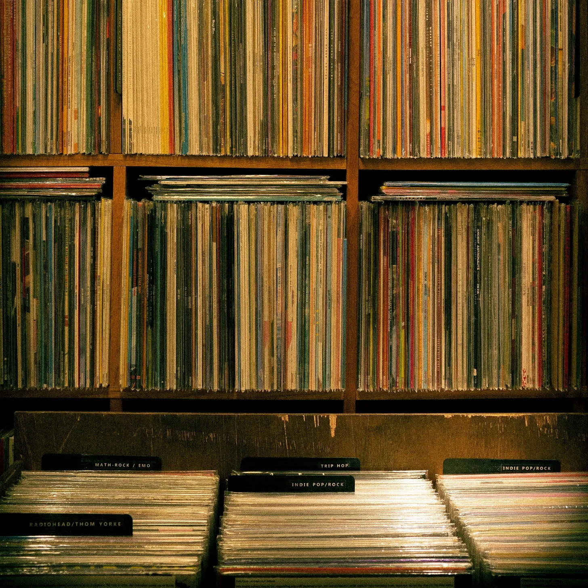

마고의 심장이 레코드 바늘과 함께 뛰었다. 그녀는 얼어붙은 채로 비닐 상자 위를 손가락으로 맴돌았고, 귀를 쫑긋 세우며 희미하게 들리는 “크립"의 음을 잡으려고 애썼다. 레코드 가게의 퀴퀴한 공기가 그녀 주변에서 더욱 짙어지는 것 같았다.
“네가 고장냈어,” 카운터 뒤에서 으르렁거리는 목소리가 들렸다. 비니 씨는 주름투성이에 찡그린 얼굴로 뿔테 안경 너머로 그녀를 노려보았다.
“저는 안 그랬어요—플레이어를 만지지도 않았는데요,” 마고가 더듬거렸지만, 죄책감이 등줄기를 타고 올라왔다. 그녀는 몇 달 동안 매주 화요일마다 이곳에 와서 앨범 표지를 손가락으로 쓰다듬으며 그 특별한 연결고리를 찾고 있었다. 오늘은 달라야 했다. 오늘, 그녀는 다음과 같이 이야기할 계획이었다.
문 위의 종이 딸랑거렸다. 제이미가 들어왔다. 팔꿈치까지 걷어 올린 플란넬 셔츠에 구릿빛 머리카락이 눈으로 흘러내렸다. 마고는 그가 고개를 끄덕이며 입술에 미소를 띄우는 것을 보고 숨이 멎었다.
“야,” 그가 카운터 뒤로 미끄러지듯 들어오며 말했다. “다 괜찮아? 음악이 끊긴 걸 들었거든.”
비니 씨가 콧방귀를 뀌었다. “이 녀석이,” 그가 마고를 향해 엄지손가락을 까딱이며 말했다, “남의 물건에 손대는 걸 못 참네.”
제이미의 눈썹이 치켜 올라갔고, 마고는 얼굴이 화끈거리는 걸 느꼈다. 이렇게 되리라고는 생각도 못했다. 그녀는 무슨 말을 할지, 어떻게 그 새로운 인디 밴드를 자연스럽게 언급할지, 커피를 마시자고 혹시 제안할지 연습했었다. 지금 그녀는 말 한 마디 못하고 당황한 채로 서 있었고, 제이미는 턴테이블을 만지작거리고 있었다.
“흠,” 그가 중얼거렸다. “벨트가 그냥 미끄러진 것 같아. 별 문제 없어.” 그가 고개를 들어 마고와 눈을 마주쳤다. “라디오헤드 좋아해?“
마고는 자신의 목소리를 믿지 못한 채 고개만 끄덕였다. 제이미가 활짝 웃더니 카운터 아래로 손을 뻗어 낡은 앨범을 꺼냈다. “비 사이즈 들어본 적 있어? 이게 내가 제일 좋아하는 거야.”
첫 화음이 공기를 가득 채우자 마고는 뭔가가 바뀌는 걸 느꼈다. 오늘이 망친 게 아닐지도 모른다는 생각이 들었다.
제이미의 손가락이 비닐 위를 경건하게 어루만지듯 움직였다. “이 곡은 ‘토크 쇼 호스트'라고 해,” 그가 눈을 반짝이며 말했다. “마치 번개를 병에 담아놓은 것 같지 않아?”
마고는 여전히 목소리를 믿을 수 없어 고개만 끄덕였다. 가게가 점점 좁아지는 것 같았고, 그녀와 제이미, 그리고 그들 사이에서 부풀어 오르는 음악만이 남은 것 같았다.
비니 씨가 구석에서 콧방귀를 뀌었다. “너희 둘 뭐 살 거야, 아니면 그냥 내 턴테이블만 닳게 할 거야?”
제이미가 마고에게 윙크했다. “우리 다른 데로 갈까? 내가 아는 카페가 있는데, 거기선 우리가 비 사이즈에 대해 떠들어도 괜찮을 거야.”
심장이 쿵쾅거리는 가운데 마고는 자신도 모르게 고개를 끄덕이고 있었다. 그들이 햇빛 속으로 걸어 나갈 때, 제이미의 손이 그녀의 손을 스쳤다. 정전기일 뿐이라고 그녀는 스스로에게 말했지만, 그렇게 믿을 수는 없었다.
그들은 걸으며 밴드 이름을 비밀처럼 주고받았다. 카페는 구멍가게 같은 곳이었는데, 짝이 맞지 않는 머그컵들과 바랜 콘서트 포스터들로 가득했다.
“그래서,” 제이미가 낡은 안락의자에 자리를 잡으며 말했다. “라디오헤드 팬이구나, 응? 네 음악적 옷장에 어떤 다른 해골들이 숨어 있어?“
마고가 씩 웃으며 가방 속으로 손을 뻗었다. 그녀는 낡은 CD 케이스를 꺼냈는데, 커버 아트는 이미 오래전에 바랜 상태였다. "마이크로폰즈라고 들어봤어?”
제이미의 눈이 커졌다. “말도 안 돼! '더 글로우, 파트 2'는 내 인생을 바꿔놨다고!”
그들이 로우파이 프로덕션에 대한 열띤 토론에 빠져들 때, 마고는 가슴 속에서 뭔가가 펼쳐지는 것을 느꼈다. 그것은 따뜻하고 두려우면서도 가능성과 같은 느낌이었다.
밖에서는 세상이 계속 돌아갔다. 안에서는 두 사람이 멜로디와 공유된 열정으로 연결고리를 만들어갔다. 한 번에 하나씩, 잘 알려지지 않은 곡으로.
The needle skipped, and Margo’s heart along with it. She froze, fingers hovering over the crate of vinyl, ears straining to catch the fading notes of “Creep” as they warbled into silence. The record store’s musty air seemed to thicken around her.
“You broke it,” a voice growled from behind the counter. Mr. Vinny, all wrinkles and scowl, glared at her over horn-rimmed glasses.
“I didn't—I wasn’t even touching the player,” Margo stammered, but guilt crawled up her spine anyway. She’d been coming here every Tuesday for months, fingers dancing over album spines, searching for that elusive connection. Today was supposed to be different. Today, she’d planned to talk to—
The bell above the door jingled. In walked Jamie, flannel shirt rolled to the elbows, a shock of copper hair falling into his eyes. Margo’s breath caught as he nodded at her, a half-smile playing on his lips.
“Hey,” he said, sliding behind the counter. “Everything okay? I heard the music cut out.”
Mr. Vinny huffed. “This one,” he jerked a thumb at Margo, “can’t keep her mitts off things that don’t belong to her.”
Jamie’s eyebrows rose, and Margo felt her cheeks burn. This wasn’t how it was supposed to go. She’d practiced what to say, how to casually mention that new indie band, maybe suggest grabbing coffee. Now she stood, mute and mortified, as Jamie fiddled with the turntable.
“Huh,” he muttered. “Looks like the belt just slipped. No harm done.” He glanced up, catching Margo’s eye. “You like Radiohead?”
Margo nodded, not trusting her voice. Jamie grinned, reached beneath the counter, and pulled out a worn album. “Ever hear the B-sides? This one’s my favorite.”
As the first chords filled the air, Margo felt something shift. Maybe today wasn’t ruined after all.
Jamie’s fingers danced over the vinyl, his touch reverent. “This one’s called 'Talk Show Host,’” he said, eyes lighting up. “It’s like they bottled lightning, you know?”
Margo nodded, not quite trusting her voice. The store seemed to shrink, leaving just her, Jamie, and the music swelling between them.
Mr. Vinny harrumphed from his corner. “You two gonna buy anything, or just wear out my turntable?”
Jamie winked at Margo. “How about we take this elsewhere? I know a coffee shop that won’t mind if we geek out over B-sides.”
Heart pounding, Margo found herself nodding. As they stepped into the sunlight, Jamie’s hand brushed hers. Static electricity, she told herself, but couldn’t quite believe it.
They walked, trading band names like secrets. The coffee shop was a hole-in-the-wall affair, all mismatched mugs and faded concert posters.
“So,” Jamie said, settling into a worn armchair. “Radiohead fan, huh? What other skeletons you got in your musical closet?”
Margo grinned, reaching into her bag. She pulled out a battered CD case, its cover art long faded. “Ever hear of The Microphones?”
Jamie’s eyes widened. “No way! 'The Glow, Pt. 2’ changed my life!”
As they dove into a heated debate about lo-fi production, Margo felt something unfurling in her chest. It was warm and terrifying and felt a lot like possibility.
Outside, the world spun on. Inside, two people built a bridge of melodies and shared passion, one obscure track at a time.